DRUMS
−0.50 dB best mask alternative at 40%Masking changes the training trajectory, but every eligible setting loses on PSNR, SSIM, and LPIPS.
CP4282 · Gaussian Splatting
A scene-dependent study of learned-mask and importance pruning at equal Gaussian counts.
Use ↓ or Space to advance
01 · Research question
At the same final Gaussian count, does mask-first training improve novel-view quality over importance pruning alone?
Because masks are learned jointly with rendering, they should identify dispensable Gaussians better than post-hoc importance ranking; scene structure would determine the size of that advantage.
02 · Matched-budget results
03 · Scene-dependent effect
ΔPSNR versus importance-only pruning at the same final count
DRUMS
−0.50 dB best mask alternative at 40%Masking changes the training trajectory, but every eligible setting loses on PSNR, SSIM, and LPIPS.
FICUS
+1.04 dB mask .004 at 20%The advantage already exists before pruning; importance ranking preserves the improved representation.
LEGO
−2.12 dB best mask alternative at 20%Even the weakest penalty hurts. Stronger mask pressure degrades quality monotonically.
Practical result: in 2 of 3 scenes, skipping learned masks improved quality while avoiding extra training runs and scene-specific λ trial-and-error.
04 · Representative test views
40% and 20% retention · views closest to each scene’s mean PSNR difference at each budget
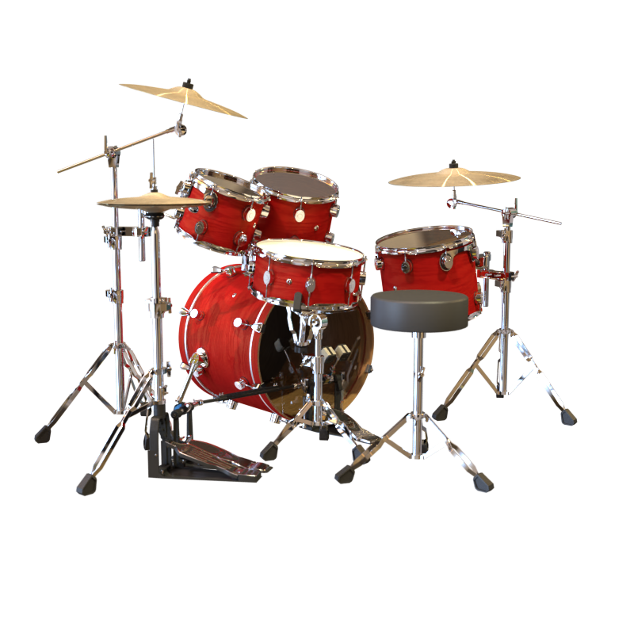
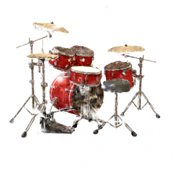
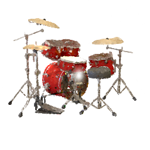
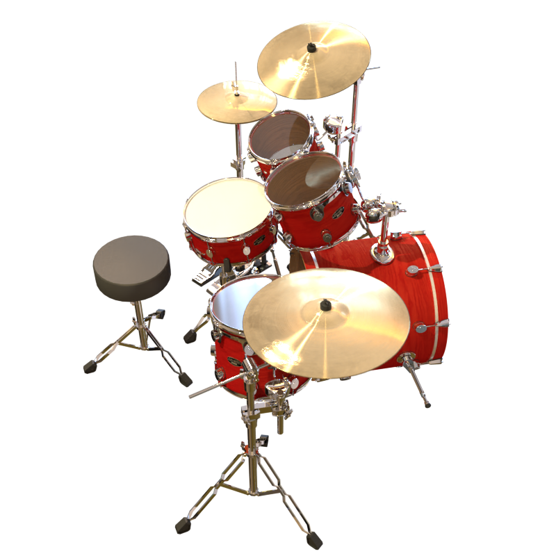
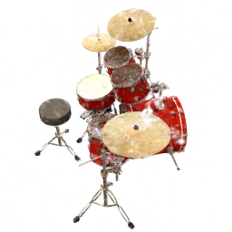
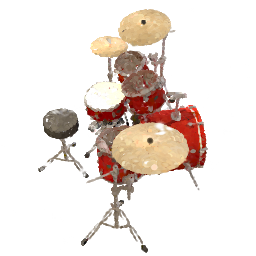
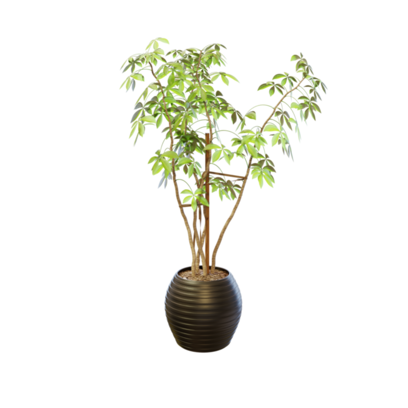
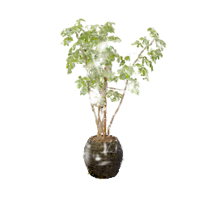
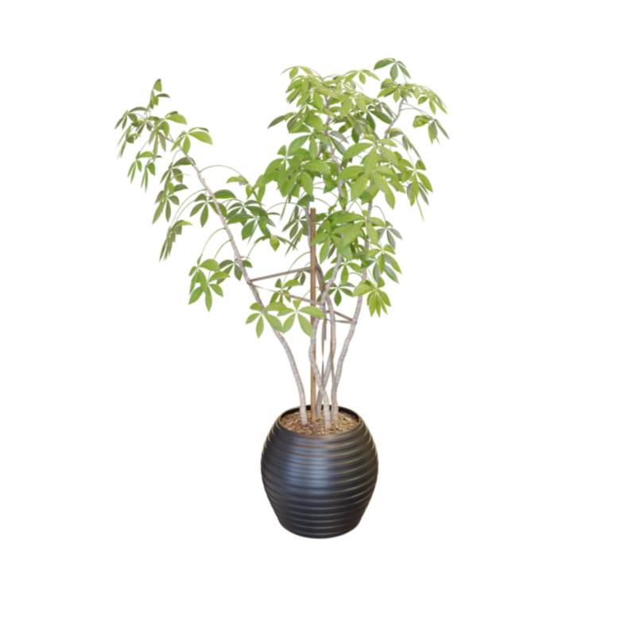
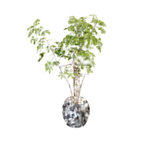
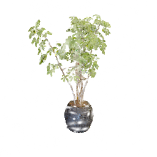
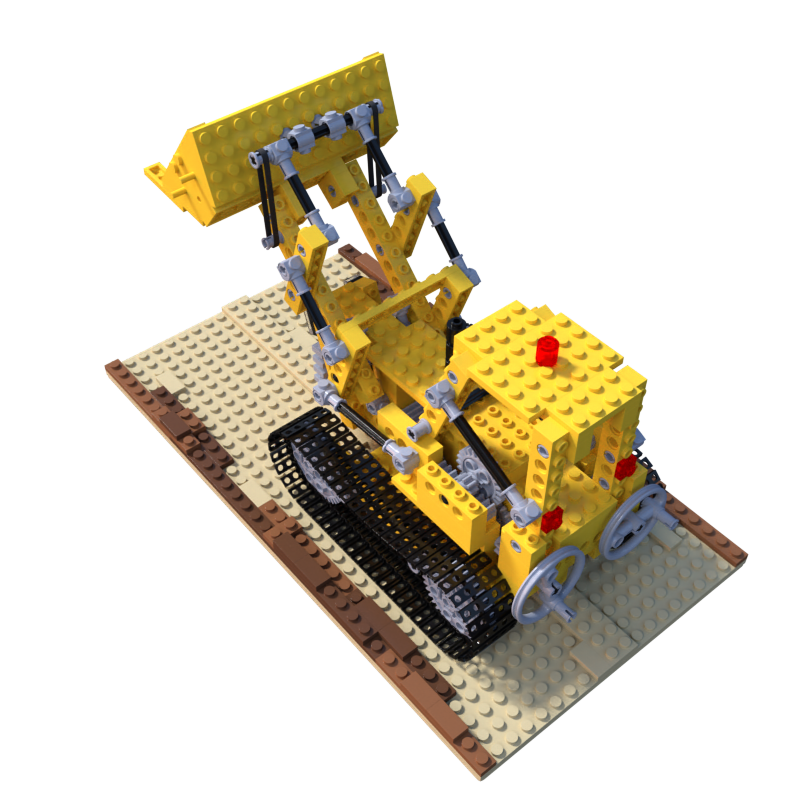
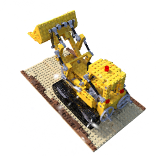
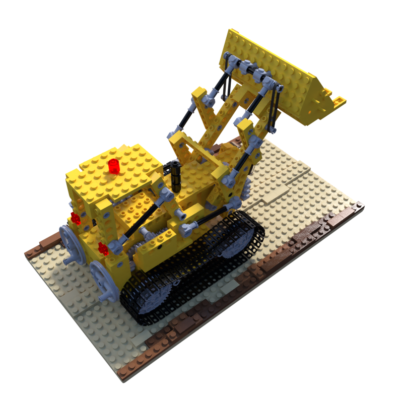
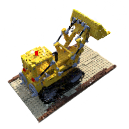
At each budget, the selected camera has a per-view PSNR difference closest to the scene’s 200-view mean—representative examples, not extremes.
05 · Penalty instability
Final active Gaussian count after 20k iterations
Ficus collapses early to 39 Gaussians.
Drums: 16 · Ficus: 0 · Lego: 84
A fixed penalty is not a reliable compaction target.
06 · A strong baseline
The unmasked baseline is already highly redundant. A learned mask must improve the representation—not merely remove Gaussians—to beat it.
07 · What failed—and what fixes it
Densely sample the transition or control λ to follow a target count.
Repeat leading arms across 3–5 seeds with paired confidence intervals.
Fine-tune every compact model equally with pruning and densification disabled.
Test a scene-level rule on more synthetic and real captures.
Collapse is now a structured exclusion, not a broken dependency.
Added a resolution-aware minimum buffer capacity.
Repairs reran only failed or missing steps.
08 · Conclusion
Learned masks justified their extra training and scene-specific λ search only for Ficus. Start with importance pruning; add masks only when a pilot improves validation without collapsing the count.